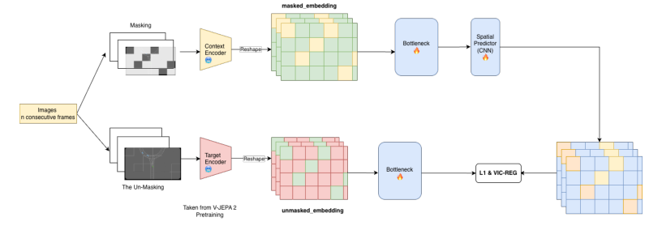
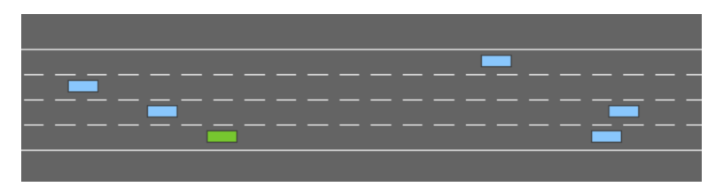
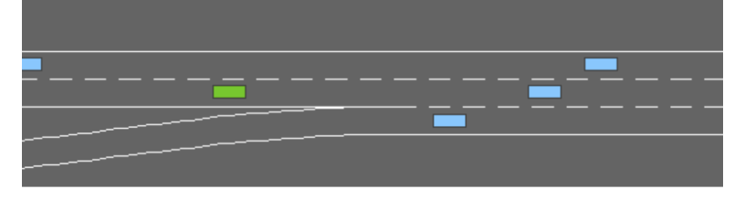
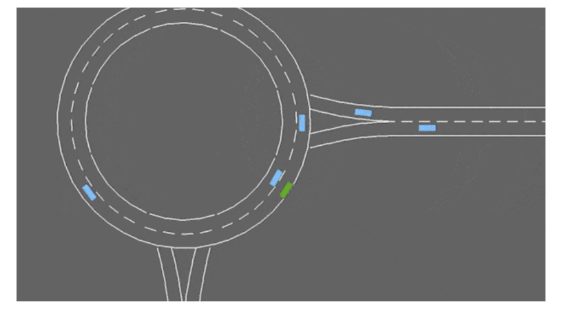

HanoiWorld
简单摘要
当前自主控制器强化学习的尝试对数据要求较高，但结果表现不佳、不稳定，无法抓住和锚定安全概念，并且由于像素重建的性质而过度关注噪声特征。虽然当前的自监督学习方法通过利用联合嵌入预测架构（JEPA）来学习高维表示是有趣且有效的替代方案，因为该想法是模仿人类大脑的自然状态，利用想象力和最小的观察样本来获取新技能。本研究介绍了 HanoiWorld，这是一种基于 JEPA 的世界模型，使用循环神经网络 (RNN) 进行具有有效推理时间的长期水平规划。在不同环境下的 Highway-Env 包上进行的实验展示了制定驾驶计划的有效能力，同时具有与 SOTA 基线相比相当大的碰撞率的安全意识。


简而言之，这篇论文关注的核心是：当前自主控制器强化学习的尝试对数据要求较高，但结果表现不佳、不稳定，无法抓住和锚定安全概念，并且由于像素重建的性质而过度关注噪声特征。虽然当前的自监督学习方法通过利用联合嵌入预测架构（JEPA）来学习高维表示是有趣且有效的替代方案，因为该想法是模仿人类大脑的自然状态，利用想象力和最小的观察样本…
自 1986 年卡内基梅隆大学首次进行自动驾驶汽车 (AV) 实验以来，自动驾驶汽车的开发研究领域在技术和现实世界的实际应用方面都取得了重大进展。车辆预计能够安全运行，同时应对不确定性、部分可观测性和多智能体环境的挑战（自我车辆与周围车辆之间的交互，以及行人障碍物等）。然而，正如所建议的，这些挑战确实限制了在这种基于强化学习的控制器上部署和实验的可行性，并且先前的工作仅基于物理环境中的朴素转移范式，这导致由于噪声和数据碎片而导致训练不稳定。
从技术角度来看，自动驾驶的决策传统上依赖于模拟器进行经验推出，而基于数据丰富性假设的强化学习规划算法，而经典的尝试 - 例如蒙特卡罗树搜索（MCTS）或部分可观察马尔可夫决策过程（POMDP）下的置信空间规划（POMDP）需要模拟器内的大量计算开销，以便在不进行策略训练的情况下进行实验推出，虽然这些方法确实解决了不确定性，但可扩展性较差是有限的。此外，这种推出策略往往会在长期范围内放大误差，并导致模型不准确度的提高。
此外，观察级预测倾向于优先考虑视觉和运动保真度作为重建挑战，这可能无法真正封装与决策相关的流形，并导致对象控制效率低下。灵感来自于人类获得新技能的能力，即通过利用基于当前与环境的相互作用对可能的未来场景进行想象的能力——基于可供性的理论和人类记忆，可以将其形式化为模型设计实现，即使用自我监督学习范式的表示来学习环境动态。联合嵌入预测架构（JEPA）提出通过直接预测未来表示来学习潜在空间，无需重建原始观察结果，而仅在编码器之间进行结构对齐并强制执行信息可变性，而不是通过噪声的随机性来防止嵌入崩溃。
V-JEPA-2 是最先进的模型，扩展了这一理念……
核心创新
综合引言与方法部分，这篇论文的核心创新可以概括为以下几方面：
1）问题定义与研究动机
自 1986 年卡内基梅隆大学首次进行自动驾驶汽车 (AV) 实验以来，自动驾驶汽车的开发研究领域在技术和现实世界的实际应用方面都取得了重大进展。车辆预计能够安全运行，同时应对不确定性、部分可观测性和多智能体环境的挑战（自我车辆与周围车辆之间的交互，以及行人障碍物等）。然而，正如所建议的，这些挑战确实限制了在这种基于强化学习的控制器上部署和实验的可行性，并且先前的工作仅基于物理环境中的朴素转移范式，这导致由于噪声和数据碎片而导致训练不稳定。从技术角度来看，自动驾驶的决策传统上依赖于模拟器进行经验推出，而基于数据丰富性假设的强化学习规划算法，而经典的尝试 - 例如蒙特卡罗树搜索（MCTS）或部分可观察马尔可夫决策过程（POMDP）下的置信空间规划（POMDP）需要模拟器内的大量计算开销，以便在不进行策略训练的情况下进行实验推出，虽然这些方法确实解决了不确定性，但可扩展性较差是有限的。此外，这种推出策略往往会在长期范围内放大误差，并导致模型不准确度的提高。此外，观察级预测倾向于优先考虑视觉和运动保真度作为重建挑战，这可能无法真正封装与决策相关的流形，并导致对象控制效率低下。灵感来自于人类…
2）方法框架与核心模块
HanoiWorld：基于联合嵌入预测架构的自动车辆控制器世界模型 Tran Tien Dat1,2、Nguyen Hai An1,2、Nguyen Khanh Viet Dung1,2、Nguyen Duy Duc1,2 1越南河内科技大学数学与信息学学院 2美国特洛伊大学 {Dat.TT228006， An.NH227993}@sis.hust.edu.vn {Dung.NKV207947, Duc.ND218129}@sis.hust.edu.vn dtran220296@troy.edu 摘要 目前自主控制器强化学习的尝试对数据要求很高，但结果表现不佳、不稳定，无法抓住和锚定安全概念，并且过度集中由于像素重建的性质，噪声特征受到影响。虽然当前的自监督学习方法通过利用联合嵌入预测架构（JEPA）来学习高维表示是有趣且有效的替代方案，因为该想法是模仿人类大脑的自然状态，利用想象力和最小的观察样本来获取新技能。本研究介绍了 HanoiWorld，这是一种基于 JEPA 的世界模型，使用循环神经网络 (RNN) 进行具有有效推理时间的长期水平规划。在不同环境下的 Highway-…
3）实验设计与工程价值
本文的这一部分将重点介绍用于评估 HanoiWorld 与不同基线方法相比的性能的实验。 实验描述 为了评估 HanoiWorld 与不同替代方案的比较性能，实验应在由 提供的 HighwayEnv 包的环境中进行，其中包括 Highway、Roundabout、Merge，这将在小节中详细讨论，我们在设计时选择的比较世界模型设计包括由 提出的 DreamerV3、VQ-VAE + ConvLSTM 基于 和 HanoiWorld 提出的代理建议。基线模型描述如下： itemize 提出的基于 ConvLSTM planner 的 VQ-VAE 编码器是一个小型且离散的潜在世界模型，旨在对潜在空间进行有效的推理和规划，作为 的思想的继承。基于 VQ-VAE 的解决方案是在 Atari 游戏的 10 万个情节上使用近端策略优化 (PPO) 算法设计的，该算法提出用于离散想象的推出的潜在空间…
技术细节
下面按照论文的方法章节结构展开，重点说明模型的关键模块、公式设计和训练策略。
HanoiWorld：基于联合嵌入预测架构的自动车辆控制器世界模型 Tran Tien Dat1,2、Nguyen Hai An1,2、Nguyen Khanh Viet Dung1,2、Nguyen Duy Duc1,2 1越南河内科技大学数学与信息学学院 2美国特洛伊大学 {Dat.TT228006， An.NH227993}@sis.hust.edu.vn {Dung.NKV207947, Duc.ND218129}@sis.hust.edu.vn dtran220296@troy.edu 摘要 目前自主控制器强化学习的尝试对数据要求很高，但结果表现不佳、不稳定，无法抓住和锚定安全概念，并且过度集中由于像素重建的性质，噪声特征受到影响。虽然当前的自监督学习方法通过利用联合嵌入预测架构（JEPA）来学习高维表示是有趣且有效的替代方案，因为该想法是模仿人类大脑的自然状态，利用想象力和最小的观察样本来获取新技能。本研究介绍了 HanoiWorld，这是一种基于 JEPA 的世界模型，使用循环神经网络 (RNN) 进行具有有效推理时间的长期水平规划。在不同环境下的 Highway-Env 包上进行的实验展示了制定驾驶计划的有效能力，同时具有与 SOTA 基线相比相当大的碰撞率的安全意识。 1 引言 自 1986 年卡内基梅隆大学首次进行自动驾驶汽车（AV）实验以来[1]，自动驾驶汽车的研究领域在技术和现实应用方面都取得了重大进展。车辆预计能够安全运行，同时应对不确定性、部分可观测性和多智能体环境的挑战（自我车辆与周围车辆之间的交互，以及行人障碍物等）[2, 3]。然而，正如[4]所表明的，这些挑战确实限制了在这种基于强化学习的控制器上进行部署和实验的可行性，并且之前的工作仅基于从物理环境中简单传输 1 arXiv:2601.01577v1 [cs.RO] 4 Jan 2026 2 范式，这会导致由于噪声和数据碎片而导致训练不稳定 [4-6]。
从技术角度来看，AV的决策传统上依赖于模拟器进行经验推出，以及基于数据丰富性假设的强化学习规划算法[7, 8]，而经典的尝试 - 例如蒙特卡洛树搜索（MCTS）或部分可观察马尔可夫决策过程（POMDP）下的置信空间规划（POMDP）需要模拟器内的大量计算开销来进行实验推出，而不进行策略训练[9-11]，而这些方法确实提供了解决不确定性，但可扩展性有限[12]。此外，这种推出策略往往会放大长期范围内的误差，并导致模型不准确度的提高[13, 14]。此外，观察水平预测倾向于优先考虑视觉和运动保真度作为重新考虑的因素。
$$ \label{eq:FID} \mathrm{FID}(\mathcal{X}_r, \mathcal{X}_g) = \|\boldsymbol{\mu}_r - \boldsymbol{\mu}_g\|_2^2 + \mathrm{Tr} \left( \boldsymbol{\Sigma}_r + \boldsymbol{\Sigma}_g - 2\left( \boldsymbol{\Sigma}_r \boldsymbol{\Sigma}_g \right)^{\frac{1}{2}} \right) $$
现实差距 一个持续存在的困难是没有一个单一的指标可以完全捕捉驾驶世界模型的质量。生成指标为 FID - Fréchet 起始距离，或 FVD - Fréchet 视频距离，可以表示为等式： eq：FID 和 Eq。等式：FVD。这些指标衡量视觉真实感，但是……
$$ \label{eq:FVD} \mathrm{FVD}(\mathcal{V}_r, \mathcal{V}_g) = \|\boldsymbol{\mu}_r - \boldsymbol{\mu}_g\|_2^2 + \mathrm{Tr} \left( \boldsymbol{\Sigma}_r + \boldsymbol{\Sigma}_g - 2\left( \boldsymbol{\Sigma}_r \boldsymbol{\Sigma}_g \right)^{\frac{1}{2}} \right) $$
这些指标衡量视觉真实感，但可能会忽略物理合理性或规划相关性。假设：分别逐项列出并表示真实图像样本集和生成图像样本集。和 分别表示真实视频样本和生成视频样本的集合。并表示深度 f 的经验平均向量...
$$ \label{eq:MDP} \mathcal{M} = (\mathcal{S}, \mathcal{A}, \mathcal{P}, r, \gamma), $$
应利用的算法 符号 我们的问题可以形式化为确定性马尔可夫决策过程（MDP），使用内部连续随机状态和确定性状态，并按照建议在有限水平环境中产生确定性连续动作。 MDP 可以...
$$ \bar{\theta} \;\leftarrow\; \tau\,\bar{\theta} + (1 - \tau)\,\theta, \label{eq:ema_update} $$
使用对齐损失作为方程。 eq:jepa_loss 和 VICReg 正则化目标 。图 EMA 教师编码器。让 表示学生编码器的参数， 表示教师编码器的参数。教师参数使用指数移动平均值进行更新：其中 是动量系数。...
$$ \mathcal{L}_{\text{align}} = \left\| P_\phi\!\left(\Delta_y, E_\theta(x)\right) - \operatorname{sg}\!\left(E_{\bar{\theta}}(y)\right) \right\|_1, \label{eq:jepa_loss} $$
nt，我们设置 = 0.996。蒙面表示预测。给定视频和通过删除时空补丁子集获得的屏蔽视图，编码器从可见标记中提取表示。训练预测器来预测屏蔽标记的表示。主要培训目标是定义……
$$ \label{eq:rssm_generative} \begin{aligned} h_t &= f_\theta(h_{t-1}, z_{t-1}, a_{t-1}), \\ z_t &\sim p_\theta(s_t \mid h_t), \\ z_t &\sim p_\theta(z_t \mid h_t, z_t), \\ r_t &\sim p_\theta(r_t \mid h_t, z_t). \end{aligned} $$
mory 模块，存储长期历史语义的确定性记忆，以及基于环境编码信号的不确定性预测的随机潜在值，用于捕获世界的演化，以及以世界状态转换为条件的智能体的预期先验。生成式项目…



把全文方法串起来看，这篇论文的逻辑基本都遵循同一条主线：先把输入组织成更容易处理的表示，再通过模型结构和损失函数把这个表示推向目标输出，最后用可视化与数值实验共同证明该设计有效。
实验结论
实验部分主要回答两个问题：第一，方法是否真的优于已有基线；第二，这种优势来自哪一个设计决策。
本文的这一部分将重点介绍用于评估 HanoiWorld 与不同基线方法相比的性能的实验。 实验描述 为了评估 HanoiWorld 与不同替代方案的比较性能，实验应在由 提供的 HighwayEnv 包的环境中进行，其中包括 Highway、Roundabout、Merge，这将在小节中详细讨论，我们在设计时选择的比较世界模型设计包括由 提出的 DreamerV3、VQ-VAE + ConvLSTM 基于 和 HanoiWorld 提出的代理建议。基线模型描述如下： itemize 提出的基于 ConvLSTM planner 的 VQ-VAE 编码器是一个小型且离散的潜在世界模型，旨在对潜在空间进行有效的推理和规划，作为 的思想的继承。基于 VQ-VAE 的解决方案是在 Atari 游戏的 10 万个情节上使用近端策略优化 (PPO) 算法设计的，该算法提出用于离散想象的推出的潜在空间规划。 DreamerV3 目前已达到 State-Off-The-Art 水平的性能，具有 RSSM 网络的长期水平规划能力，这确实通过尝试学习鲁棒性和环境不可知的泛化模型来启发 HanoiWorld 的设计，该模型用于预测可能的下一个潜在状态、奖励和延续，该模型用于向多层感知器层生成有关奖励和值的训练信号基于想象的 rollout 的预测，Actor 遵循 REINFORCE 梯度更新，或混合来自 RSSM 的更新学习信号，以实现鲁棒和稳定的学习 itemize 对于评估指标，选择的指标 2 指标 - 平均奖励（例如分数）和碰撞率如下： itemize 平均奖励/分数是用于评估代理在规划效率上的效率的指标 - 这是跨步骤的奖励信号的平均值 - 其中用方程展示。 eq:avg_reward 碰撞率是一个指标，可以通过自我车辆发生碰撞的事件比例来估计，用方程式表示。 eq:collision_rate itemize 鉴于： itemize 表示所有评估事件的平均驾驶奖励。是评估集的总数。索引剧集。对剧集内的时间步进行索引。是在episode中的时间步收到的瞬时奖励。
逐条解释：较高的值表示更好的驾驶行为，意味着更平稳的控制（更少的晃动）和更安全的轨迹（更少的碰撞）。案例研究 该实验是在交互式…
- 方法在核心指标上的优势与结构设计和训练目标直接相关；
- 消融实验表明，拿掉关键模块后性能与结果质量都有明显回落；
- 论文不仅比较数值，也关注可视化质量、稳定性和泛化能力等更贴近真实使用的信号。
理解评价
这项研究展示了 HanoiWorld，一种基于 JEPA 的世界模型，用于在强化学习中训练自动车辆控制器时进行模拟生成，结果证明 HanoiWorld 能够在作为 SOTA 基线的潜在域内制定有效的规划策略，而较轻的竞争对手由于计算效率的原因，使得这些尝试看起来比基于像素重建的方法更有吸引力。此外，我们的模型确实表明，在某些特定场景下，HanoiWorld 的碰撞率较低，这可以假设该模型确实学习了跨环境的安全性概念，但与 DreamerV3 等 SOTA 基线相比，该模型的规划机制表现不佳。
值得注意的是，当前的研究并没有尝试使用多模态输入作为语言、全局图来整合更多的全局上下文条件；加上实际评估的潜在探索——了解WorldModel在不同环境硬度下的刨削机制；这表明有可能为以后的研究提供进一步的指导，并继续使用 HanoiWorld 的结果。
如果把它当成研究参考，建议重点关注三件事：第一，这套方法真正依赖的归纳偏置是什么；第二，实验中真正拉开差距的模块是哪一个；第三，它的局限究竟来自数据、算力还是监督信号本身。
以下相关论文可以作为进一步追踪的入口：